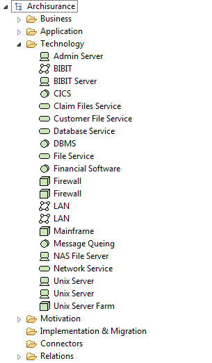
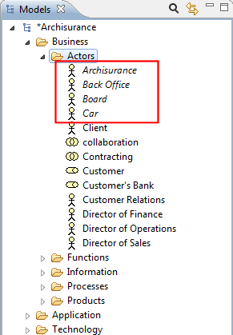

-
Objectives
The objective of this lab is to install Archi (archimate modelling) and through it's use, bring a practical focus to some of the terms and concepts covered in the lecture.
-
Installing Archi (a tool for ArchiMate modelling)

You can read more about ArchiMate here: http://pubs.opengroup.org/architecture/archimate2-doc/toc.html
Nagivate to the ArchiMate website:
and click the Free Download button to save the latest version to your local disk:
Once it is downloaded, locate the file on your hard disk and run it.
Once installed, start the Archi application:

Close the Welcome window. You are now ready to start modelling:

-
Archisurance Example
Archi comes with two example Models:
- Archisurance (the focus of this lab)
- OpenDay
Open the Archisurance model that is stored in the examples folder for your recently installed Archi application:


The Model Tree for Archisurance looks like this:

Note: when you create an empty model, you are provided with the highest-level folder structure. You can create sub-folders under these and this allows you to organise the elements in any way you wish.
The Archinsurance model contains elements that typically belong to one of three main layers at which an enterprise can be modelled:
- The Business Layer
- The Application Layer
- The Technology Layer
In the next few steps, we will briefly look at each of these three layers and the elements within. We will also investigate some other folders in the Model Tree.
-
Archinsurance Example - Business Layer
According to opengroup.org, "the Business Layer offers products and services to external customers, which are realised in the organisation by business processes performed by business actors."

Business Layer - Legend of Possible Elements


Actors (user-defined sub folder)
Referring to the legend of elements above, review the Actors created in the Archinsurance model:

Functions (user-defined sub folder)
Referring to the legend of elements above, review the Functions created in the Archinsurance model:

Information (user-defined sub folder)
Referring to the legend of elements above, review the Information elements created in the Archinsurance model:

Processes (user-defined sub folder)
Referring to the legend of elements above, review the Processes created in the Archinsurance model:

Products (user-defined sub folder)
Referring to the legend of elements above, review the Produts created in the Archinsurance model:

For more information on the Business Layer, please visit http://pubs.opengroup.org/architecture/archimate2-doc/chap03.html
-
Archinsurance Example - Application Layer
According to opengroup.org, "the Application Layer supports the business layer with application services which are realised by (software) applications."

Application Layer - Legend of Possible Elements

Applications and Data (user-defined sub folders)
Referring to the legend of elements above, review the elements created in the Applications and Data subfolders.
For more information on the Application Layer, please visit http://pubs.opengroup.org/architecture/archimate2-doc/chap04.html
-
Archinsurance Example - Technology Layer
According to opengroup.org, "the Technology Layer offers infrastructure services (e.g., processing, storage, and communication services) needed to run applications, realised by computer and communication hardware and system software."

Technology Layer - Legend of Possible Elements

Technology Folder
Referring to the legend of elements above, review the elements created in the Technology folder.
For more information on the Application Layer, please visit http://pubs.opengroup.org/architecture/archimate2-doc/chap05.html
-
Archinsurance Example - Motivation Extension
According to opengroup.org, "a motivational element is defined as an element that provides the context or reason lying behind the architecture of an enterprise. The Motivation extension of ArchiMate adds the motivational concepts such as goal, principle, and requirement. It addresses the way the enterprise architecture is aligned to its context, as described by motivational elements.

Motivation Extension - Legend of Possible Elements
Motivation Folder
Referring to the legend of elements above, review the elements created in the Motivation folder.
For more information on Motivation, please see http://pubs.opengroup.org/architecture/archimate2-doc/chap10.html#_Toc371945252
-
Archinsurance Example - Implementation & Migration Extension
According to opengroup.org, this extension adds concepts related to the implementation and migration of architectures. This extension includes concepts for modeling implementation programs and projects to support program, portfolio, and project management, and a plateau concept to support migration planning.
Implementation & Migration Extension - Legend of Possible Elements

Implementation & Migration Folder
Note that the Archinsurance example does not have any implementation on migration elements added to it.
For more information on Implementation and Migration, please see http://pubs.opengroup.org/architecture/archimate2-doc/chap11.html
-
Archinsurance Example - Connectors
According to opengroup.org, a Junction is used to connect dynamic relationships of the same type. A Junction is used in a number of situations to connect dynamic (triggering or flow) relationships of the same type; for example, to indicate splits or joins.
Connectors - Three Types of Junctions

Connectors Folder
Note that the Archinsurance example does not have any junctions added to it.
-
Archinsurance Example - Relations
Contains the relationships between elements as they are created in Views (diagrams) and any user-created sub-folders.
Classification of Relationships
Each element in the model can connect to one or more other elements via one or more relationships (connections). These can be classified as either:
- Structural, which model the structural coherence of concepts of the same or different types.
- Dynamic, which are used to model (temporal) dependencies between behavioral concepts.
- Other, which do not fall in one of the two above categories.


Relations Folder
Referring to the legend of elements above, review the elements created in the Relations folder:

For more information on relationships, please visit http://pubs.opengroup.org/architecture/archimate2-doc/chap07.html#_Toc371945208
-
Archinsurance Example - Views
We will cover this in a practical later in the course.
-
Archi - some observations
Here are some useful observations from the Archi User Guide found in the Help area of Archi.
Deleting an element
If an element that you wish to delete appears in one or more Views you will be warned that it is referenced in those Views. If you then delete the element from the tree you will also delete it from any Views where it is referenced.
Adding New Elements to the View from the Palatte
If you add elements to a View from a palatte, they are automatically added to the appropriate type folder in your Model tree.
Elements in italics
If an element in the Model Tree is in italic font, this indicates that it is not used in any View.

Synchronising Selections in the Model Tree and a View
When selecting elements in the Model Tree and in diagram Views it is sometimes useful to synchronise the selection between the elements in both windows. Pressing the "Link to View" button in the Model Tree window allows this to happen:
Filtering Element Types
To filter certain types of ArchiMate element you can select the different types to include in the filter/search in the drop-down menu: